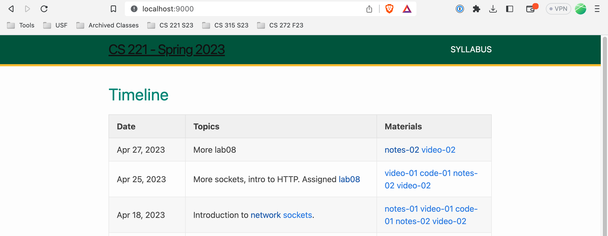

Project05 - HTTP Server
IMPORTANT DATES
- Monday, May 8th: project due date.
- Wednesday, May 10th: Last day you may submit
project05using late days. - Thursday, May 11th: peer-grading during the class time. Missing the peer-grading session without a prior arrangement with the instructor results in 0.
Requirements
- In this project, you will evolve the TCP socket (lab07) and a basic HTTP server (lab08) into a more capable HTTP server.
- You will add support for path and embedded compontents such as CSS files in HTML. Note that you do not need to write a client-side program that handles CSS or any other HTML formatting. Your web browser will take care of it.
Example output
-
You need to set up SSH port forwarding. If you were using port 9000 (use the same port number you used for lab07 and lab08) on
vlab31, then run the following command so that your web browser’s connection tolocalhoston port 9000 will be forwarded tovlab31on port 9000.ssh -L 9000:vlab31:9000 stargate -
Go to localhost:9000 on your web browser. Your HTTP server on
vlab31should respond. For the content of your server, use the content of CS221 website . -
Click on the links - the contents must match what you would see on the official CS221 website.
Implementation notes
-
Download the content of cs221 course website to serve from your own web server. To scrape the site, run
wget --recursive --page-requisites --convert-links cs221.cs.usfca.edu - If you wish to store the content in
wwwdirectory, move the contents as follows.mv cs221.cs.usfca.edu www -
You may use
fseek()andftell()function to get the size of the file for theContent-Length:part. The following line puts the file position indicator for the stream pointed to bystreamto the end of the file, andftell(stream)returns the current offset (position) in bytes.(void) fseek(stream, 0L, SEEK_END)Once the stream reaches the end of the file, you can use
rewind()orfseek(). The following commands set the file position indicator for the stream pointed to bystreamto the beginning of the file, so that your program can read the file and send it over the socket.(void) rewind(stream)(void) fseek(stream, 0L, SEEK_SET) - You may use
strsep()function to get the directory and file names from the URL.
Grading process
- Project05 will be interactively graded by peers on Thursday, May 11th, the last class day of the semester using the rubric below.
- Everyone will submit a google form with the scores. TAs will review for an error in grading and enter the scores in Canvas.
- An absence during the peer-grading session will result in 0 for project05. If you have a documented excuse, please arrange a make-up grading session with the instructor by May 4th. (The make-up session doesn’t have to happen by May 4th. You just need to schedule one by then.) Failure to schedule a make-up sesion by May 4th will result in 0.
- Note that there is no resubmission for Project05 style. The peer-grading session happens on the last class day, so there is no time for resubmission and regrading.
- Grading meetings must use the vlab terminal environment, not local IDEs on your laptop or web pages on github.com
- To ensure that everyone has the same deadline, grading meetings will start with
grade clone -p project05 -s your_github_id -d 2023-05-11to get a clean repo
Rubric
- We will use the following rubric during peer-grading session.
pathsupport (40 pts):- The contents served from the HTTP server match what are served from the official CS221 website.
- using non-blocking IO and
poll(40 pts):- check the source code for the correct use of
ioctl - check the source code for the correct use of
poll
- check the source code for the correct use of
- Defensive coding (10 pts):
- Checking for memory and I/O errors (3 pts)
- No unbounded memory copies (3 pts)
- No memory leaks (4 pts)
- Style (10 pts):
- Consistent naming and indentation (2 pts)
- Well-designed functions (2 pts)
- Helpful comments (2 pts)
- No dead (commented-out) code or unnecessarily complex code (2 pts)
- No build products or output dictionary files in the repo (2 pts)